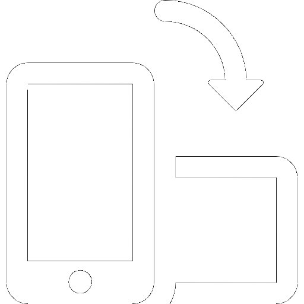

Bitte drehe dein Gerät um 90°, um das Spiel starten zu können.

Links:
Rechts:
Springen:
Flasche werfen:
Es gibt 3 unterschiedliche Gegner:
Kleine Hühnchen, normale Hühnchen und einen Endgegner.
Kleine und normale Hühnchen können mit einem Sprung von oben getötet werden. Der Endgegner kann
nur getötet werden, indem man ihn mit den Flaschen abwirft, die überall im Spiel verteilt sind und
eingesammelt werden können.
Es ist auch möglich, mit den Flaschen die anderen Gegner zu töten, allerdings sollte darauf geachtet
werden, noch ausreichend viele Flaschen für den Endgegner zu haben.